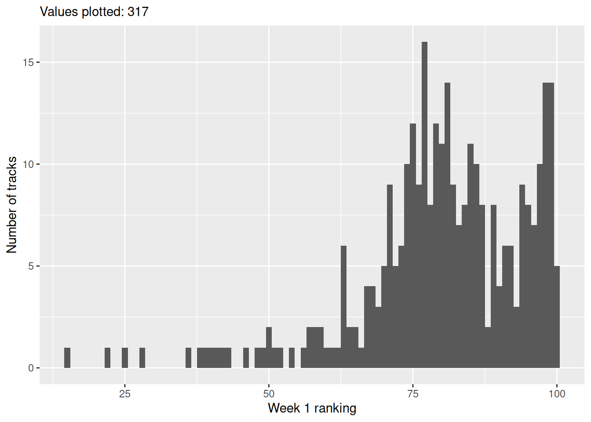
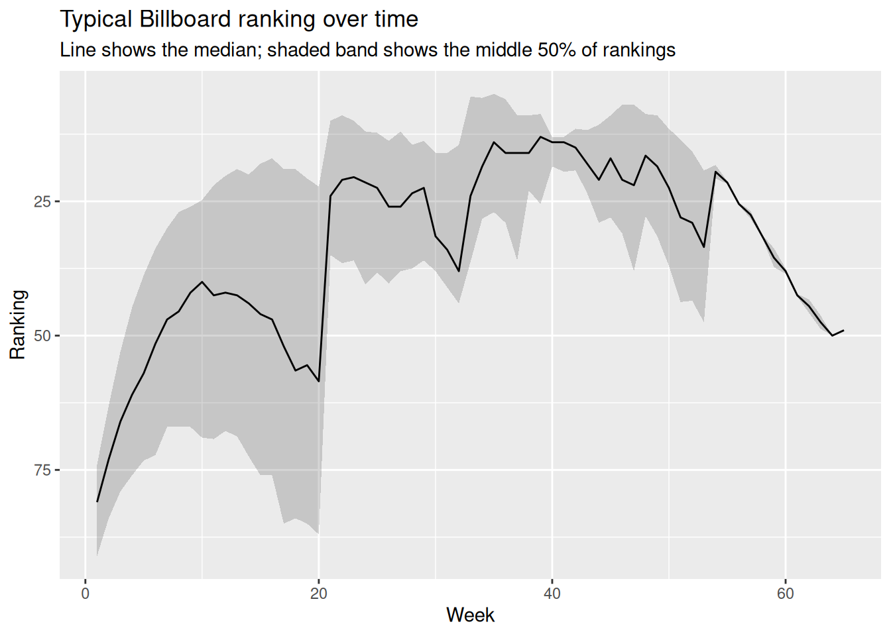
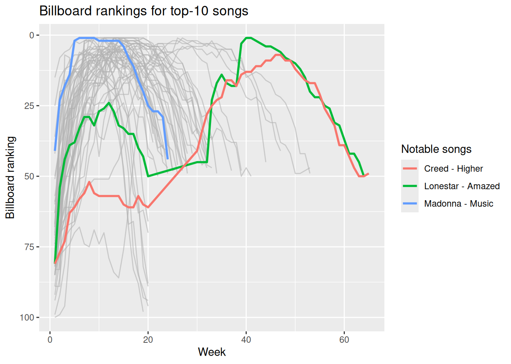

library(tidyverse)Billboard Hot 100
execute: echo: false
billboard <- readr::read_csv("data/billboard.csv", show_col_types = FALSE)billboard |>
select(artist, track, date.entered, wk1:wk4) |>
slice_head(n = 8)# A tibble: 8 × 7
artist track date.entered wk1 wk2 wk3 wk4
<chr> <chr> <date> <dbl> <dbl> <dbl> <dbl>
1 2 Pac Baby Don't Cry (Keep... 2000-02-26 87 82 72 77
2 2Ge+her The Hardest Part Of ... 2000-09-02 91 87 92 NA
3 3 Doors Down Kryptonite 2000-04-08 81 70 68 67
4 3 Doors Down Loser 2000-10-21 76 76 72 69
5 504 Boyz Wobble Wobble 2000-04-15 57 34 25 17
6 98^0 Give Me Just One Nig... 2000-08-19 51 39 34 26
7 A*Teens Dancing Queen 2000-07-08 97 97 96 95
8 Aaliyah I Don't Wanna 2000-01-29 84 62 51 41billboard |>
summary(billboard$date.entered) artist track date.entered wk1
Length :317 Length :317 Min. :1999-06-05 Min. : 15.00
N.unique :228 N.unique :316 1st Qu.:2000-02-05 1st Qu.: 74.00
N.blank : 0 N.blank : 0 Median :2000-04-29 Median : 81.00
Min.nchar: 3 Min.nchar: 3 Mean :2000-05-03 Mean : 79.96
Max.nchar: 28 Max.nchar: 23 3rd Qu.:2000-08-12 3rd Qu.: 91.00
Max. :2000-12-30 Max. :100.00
wk2 wk3 wk4 wk5
Min. : 8.00 Min. : 6.00 Min. : 5.00 Min. : 2.00
1st Qu.: 63.00 1st Qu.: 53.00 1st Qu.: 44.75 1st Qu.: 38.75
Median : 73.00 Median : 66.00 Median : 61.00 Median : 57.00
Mean : 71.17 Mean : 65.05 Mean : 59.76 Mean : 56.34
3rd Qu.: 84.00 3rd Qu.: 79.00 3rd Qu.: 76.00 3rd Qu.: 73.25
Max. :100.00 Max. :100.00 Max. :100.00 Max. :100.00
NAs :5 NAs :10 NAs :17 NAs :25
wk6 wk7 wk8 wk9
Min. : 1.00 Min. : 1.00 Min. : 1.00 Min. : 1.00
1st Qu.:33.75 1st Qu.: 30.00 1st Qu.:27.00 1st Qu.: 26.00
Median :51.50 Median : 47.00 Median :45.50 Median : 42.00
Mean :52.36 Mean : 49.22 Mean :47.12 Mean : 46.34
3rd Qu.:72.25 3rd Qu.: 67.00 3rd Qu.:67.00 3rd Qu.: 67.00
Max. :99.00 Max. :100.00 Max. :99.00 Max. :100.00
NAs :37 NAs :48 NAs :57 NAs :64
wk10 wk11 wk12 wk13
Min. : 1.00 Min. : 1.00 Min. : 1.00 Min. : 1.00
1st Qu.: 24.75 1st Qu.: 22.00 1st Qu.: 20.25 1st Qu.: 19.00
Median : 40.00 Median : 42.50 Median : 42.00 Median : 42.50
Mean : 45.79 Mean : 45.47 Mean : 44.20 Mean : 44.35
3rd Qu.: 69.00 3rd Qu.: 69.25 3rd Qu.: 67.75 3rd Qu.: 68.75
Max. :100.00 Max. :100.00 Max. :100.00 Max. :100.00
NAs :73 NAs :81 NAs :95 NAs :107
wk14 wk15 wk16 wk17
Min. : 1.00 Min. : 1.0 Min. : 1.00 Min. : 1.00
1st Qu.: 20.00 1st Qu.: 18.0 1st Qu.: 17.00 1st Qu.: 19.00
Median : 44.00 Median : 46.0 Median : 47.00 Median : 52.00
Mean : 45.89 Mean : 47.9 Mean : 48.24 Mean : 51.27
3rd Qu.: 72.50 3rd Qu.: 76.0 3rd Qu.: 76.00 3rd Qu.: 85.00
Max. :100.00 Max. :100.0 Max. :100.00 Max. :100.00
NAs :113 NAs :120 NAs :135 NAs :140
wk18 wk19 wk20 wk21
Min. : 1.00 Min. : 1.00 Min. : 2.00 Min. : 3.00
1st Qu.: 19.00 1st Qu.:20.75 1st Qu.: 22.25 1st Qu.:10.00
Median : 56.50 Median :55.50 Median : 58.50 Median :24.00
Mean : 52.11 Mean :53.17 Mean : 54.27 Mean :26.18
3rd Qu.: 84.00 3rd Qu.:85.00 3rd Qu.: 87.00 3rd Qu.:35.00
Max. :100.00 Max. :99.00 Max. :100.00 Max. :97.00
NAs :151 NAs :161 NAs :171 NAs :252
wk22 wk23 wk24 wk25
Min. : 3.00 Min. : 3.00 Min. : 3.00 Min. : 2.00
1st Qu.: 9.00 1st Qu.:10.00 1st Qu.:12.00 1st Qu.:12.25
Median : 21.00 Median :20.50 Median :21.50 Median :22.50
Mean : 25.64 Mean :23.81 Mean :26.78 Mean :26.13
3rd Qu.: 36.50 3rd Qu.:36.00 3rd Qu.:40.50 3rd Qu.:38.25
Max. :100.00 Max. :91.00 Max. :91.00 Max. :90.00
NAs :262 NAs :269 NAs :271 NAs :279
wk26 wk27 wk28 wk29 wk30
Min. : 1.00 Min. : 1.00 Min. : 2.0 Min. : 2.00 Min. : 2.0
1st Qu.:13.75 1st Qu.:12.00 1st Qu.:14.5 1st Qu.:13.75 1st Qu.:16.0
Median :26.00 Median :26.00 Median :23.5 Median :22.50 Median :31.5
Mean :28.00 Mean :27.34 Mean :25.0 Mean :23.65 Mean :26.4
3rd Qu.:40.25 3rd Qu.:38.00 3rd Qu.:37.5 3rd Qu.:36.00 3rd Qu.:38.0
Max. :89.00 Max. :86.00 Max. :58.0 Max. :49.00 Max. :45.0
NAs :281 NAs :288 NAs :293 NAs :297 NAs :297
wk31 wk32 wk33 wk34
Min. : 3.00 Min. : 3.00 Min. : 2.00 Min. : 3.00
1st Qu.:16.00 1st Qu.:14.50 1st Qu.: 5.50 1st Qu.: 5.75
Median :34.00 Median :38.00 Median :24.00 Median :18.50
Mean :28.74 Mean :30.28 Mean :23.17 Mean :19.30
3rd Qu.:41.00 3rd Qu.:44.00 3rd Qu.:36.25 3rd Qu.:28.25
Max. :49.00 Max. :47.00 Max. :50.00 Max. :49.00
NAs :298 NAs :299 NAs :305 NAs :307
wk35 wk36 wk37 wk38
Min. : 4.00 Min. : 5.00 Min. : 5.00 Min. : 9.00
1st Qu.: 5.00 1st Qu.: 6.00 1st Qu.: 9.00 1st Qu.: 9.00
Median :14.00 Median :16.00 Median :16.00 Median :16.00
Mean :16.89 Mean :18.56 Mean :20.89 Mean :19.38
3rd Qu.:27.00 3rd Qu.:29.00 3rd Qu.:36.00 3rd Qu.:23.00
Max. :34.00 Max. :41.00 Max. :48.00 Max. :40.00
NAs :308 NAs :308 NAs :308 NAs :309
wk39 wk40 wk41 wk42
Min. : 3.00 Min. : 1.00 Min. : 1.00 Min. : 2.00
1st Qu.: 8.75 1st Qu.:13.00 1st Qu.:13.00 1st Qu.:11.50
Median :13.00 Median :14.00 Median :14.00 Median :15.00
Mean :20.25 Mean :17.86 Mean :18.57 Mean :14.17
3rd Qu.:25.50 3rd Qu.:18.50 3rd Qu.:19.50 3rd Qu.:19.25
Max. :50.00 Max. :47.00 Max. :50.00 Max. :22.00
NAs :309 NAs :310 NAs :310 NAs :311
wk43 wk44 wk45 wk46 wk47
Min. : 3.00 Min. : 4.00 Min. : 4.0 Min. : 5.0 Min. : 6.0
1st Qu.:11.75 1st Qu.:10.75 1st Qu.: 9.0 1st Qu.: 7.0 1st Qu.: 7.0
Median :18.00 Median :21.00 Median :17.0 Median :21.0 Median :22.0
Mean :17.67 Mean :21.67 Mean :17.8 Mean :20.2 Mean :22.8
3rd Qu.:23.50 3rd Qu.:29.00 3rd Qu.:28.0 3rd Qu.:31.0 3rd Qu.:38.0
Max. :32.00 Max. :45.00 Max. :31.0 Max. :37.0 Max. :41.0
NAs :311 NAs :311 NAs :312 NAs :312 NAs :312
wk48 wk49 wk50 wk51 wk52
Min. : 8.00 Min. : 9.0 Min. :10.0 Min. :12.00 Min. :15.00
1st Qu.: 8.75 1st Qu.: 9.0 1st Qu.:11.5 1st Qu.:13.50 1st Qu.:15.75
Median :16.50 Median :18.5 Median :22.5 Median :28.00 Median :29.00
Mean :20.00 Mean :22.0 Mean :26.0 Mean :29.25 Mean :30.25
3rd Qu.:27.75 3rd Qu.:31.5 3rd Qu.:37.0 3rd Qu.:43.75 3rd Qu.:43.50
Max. :39.00 Max. :42.0 Max. :49.0 Max. :49.00 Max. :48.00
NAs :313 NAs :313 NAs :313 NAs :313 NAs :313
wk53 wk54 wk55 wk56
Min. :17.00 Min. :17.00 Min. :21.00 Min. :25.00
1st Qu.:19.25 1st Qu.:18.25 1st Qu.:21.25 1st Qu.:25.25
Median :33.50 Median :19.50 Median :21.50 Median :25.50
Mean :33.25 Mean :19.50 Mean :21.50 Mean :25.50
3rd Qu.:47.50 3rd Qu.:20.75 3rd Qu.:21.75 3rd Qu.:25.75
Max. :49.00 Max. :22.00 Max. :22.00 Max. :26.00
NAs :313 NAs :315 NAs :315 NAs :315
wk57 wk58 wk59 wk60 wk61
Min. :26.00 Min. :31.00 Min. :32.00 Min. :37.0 Min. :42.00
1st Qu.:26.75 1st Qu.:31.25 1st Qu.:33.75 1st Qu.:37.5 1st Qu.:42.25
Median :27.50 Median :31.50 Median :35.50 Median :38.0 Median :42.50
Mean :27.50 Mean :31.50 Mean :35.50 Mean :38.0 Mean :42.50
3rd Qu.:28.25 3rd Qu.:31.75 3rd Qu.:37.25 3rd Qu.:38.5 3rd Qu.:42.75
Max. :29.00 Max. :32.00 Max. :39.00 Max. :39.0 Max. :43.00
NAs :315 NAs :315 NAs :315 NAs :315 NAs :315
wk62 wk63 wk64 wk65 wk66
Min. :42.00 Min. :45.00 Min. :50 Min. :49 Mode:logical
1st Qu.:43.25 1st Qu.:46.25 1st Qu.:50 1st Qu.:49 NAs :317
Median :44.50 Median :47.50 Median :50 Median :49
Mean :44.50 Mean :47.50 Mean :50 Mean :49
3rd Qu.:45.75 3rd Qu.:48.75 3rd Qu.:50 3rd Qu.:49
Max. :47.00 Max. :50.00 Max. :50 Max. :49
NAs :315 NAs :315 NAs :315 NAs :316
wk67 wk68 wk69 wk70 wk71
Mode:logical Mode:logical Mode:logical Mode:logical Mode:logical
NAs :317 NAs :317 NAs :317 NAs :317 NAs :317
wk72 wk73 wk74 wk75 wk76
Mode:logical Mode:logical Mode:logical Mode:logical Mode:logical
NAs :317 NAs :317 NAs :317 NAs :317 NAs :317
wk1_n <- sum(!is.na(billboard$wk1))
billboard |>
dplyr::filter(!is.na(wk1)) |>
ggplot2::ggplot(ggplot2::aes(x = wk1)) +
ggplot2::geom_histogram(binwidth = 1) +
ggplot2::labs(
x = "Week 1 ranking",
y = "Number of tracks",
subtitle = paste("Values plotted:", wk1_n)
)
billboard |>
summarise(
wk1 = sum(is.na(wk1)),
wk4 = sum(is.na(wk4)),
wk10 = sum(is.na(wk10)),
wk20 = sum(is.na(wk20)),
wk40 = sum(is.na(wk40)),
wk76 = sum(is.na(wk76))
) |>
pivot_longer(
cols = everything(),
names_to = "week",
values_to = "missing"
) |>
mutate(present = nrow(billboard) - missing)# A tibble: 6 × 3
week missing present
<chr> <int> <int>
1 wk1 0 317
2 wk4 17 300
3 wk10 73 244
4 wk20 171 146
5 wk40 310 7
6 wk76 317 0billboard_long <- billboard |>
pivot_longer(
cols = starts_with("wk"),
names_to = "week",
names_prefix = "wk",
names_transform = list(week = as.integer),
values_to = "rank",
values_drop_na = TRUE
)
billboard_long |>
group_by(week) |>
summarise(
median_rank = median(rank),
lower_quartile = quantile(rank, 0.25),
upper_quartile = quantile(rank, 0.75)
) |>
ggplot(aes(x = week, y = median_rank)) +
geom_ribbon(
aes(ymin = lower_quartile, ymax = upper_quartile),
alpha = 0.2
) +
geom_line() +
scale_y_reverse() +
labs(
x = "Week",
y = "Ranking",
title = "Typical Billboard ranking over time",
subtitle = "Line shows the median; shaded band shows the middle 50% of rankings"
)
billboard |>
pivot_longer(
cols = starts_with("wk"),
names_to = "week",
values_to = "rank"
) |>
mutate(week = parse_number(week)) |>
filter(!is.na(rank)) |>
group_by(artist, track) |>
slice_max(week, n = 1) |>
ungroup() |>
filter(week == 20) |>
summarise(
songs_ending_week_20 = n(),
ranked_below_50 = sum(rank > 50)
)# A tibble: 1 × 2
songs_ending_week_20 ranked_below_50
<int> <int>
1 80 77billboard_song_summary <- billboard_long |>
group_by(artist, track) |>
summarise(
first_rank = rank[which.min(week)],
best_rank = min(rank),
first_week_at_best_rank = min(week[rank == min(rank)]),
weeks_on_chart = n(),
.groups = "drop"
)
billboard_song_summary# A tibble: 317 × 6
artist track first_rank best_rank first_week_at_best_r…¹ weeks_on_chart
<chr> <chr> <dbl> <dbl> <int> <int>
1 2 Pac Baby… 87 72 3 7
2 2Ge+her The … 91 87 2 3
3 3 Doors Down Kryp… 81 3 32 53
4 3 Doors Down Loser 76 55 7 20
5 504 Boyz Wobb… 57 17 4 18
6 98^0 Give… 51 2 7 20
7 A*Teens Danc… 97 95 4 5
8 Aaliyah I Do… 84 35 6 20
9 Aaliyah Try … 59 1 14 32
10 Adams, Yola… Open… 76 57 9 20
# ℹ 307 more rows
# ℹ abbreviated name: ¹first_week_at_best_ranknumber_one_songs <- billboard_song_summary |>
filter(best_rank == 1)
top_10_songs <- billboard_song_summary |>
filter(best_rank <= 10)
notable_songs <- bind_rows(
number_one_songs |>
filter(first_week_at_best_rank == min(first_week_at_best_rank)) |>
mutate(notable = "Fastest to number one"),
number_one_songs |>
filter(first_week_at_best_rank == max(first_week_at_best_rank)) |>
mutate(notable = "Slowest to number one"),
top_10_songs |>
filter(weeks_on_chart == max(weeks_on_chart)) |>
mutate(notable = "Longest chart run among top 10")
) |>
select(
notable, artist, track, first_rank, best_rank,
first_week_at_best_rank, weeks_on_chart
)
print(notable_songs, width = Inf)# A tibble: 3 × 7
notable artist track first_rank best_rank
<chr> <chr> <chr> <dbl> <dbl>
1 Fastest to number one Madonna Music 41 1
2 Slowest to number one Lonestar Amazed 81 1
3 Longest chart run among top 10 Creed Higher 81 7
first_week_at_best_rank weeks_on_chart
<int> <int>
1 6 24
2 40 55
3 46 57top_10_long <- billboard_long |>
semi_join(top_10_songs, by = c("artist", "track"))
notable_long <- top_10_long |>
semi_join(notable_songs, by = c("artist", "track")) |>
mutate(song = paste(artist, track, sep = " - "))
ggplot(top_10_long, aes(x = week, y = rank, group = interaction(artist, track))) +
geom_line(color = "gray70", alpha = 0.6) +
geom_line(
data = notable_long,
aes(color = song),
linewidth = 1
) +
scale_y_reverse() +
labs(
x = "Week",
y = "Billboard ranking",
color = "Notable songs",
title = "Billboard rankings for top-10 songs"
)